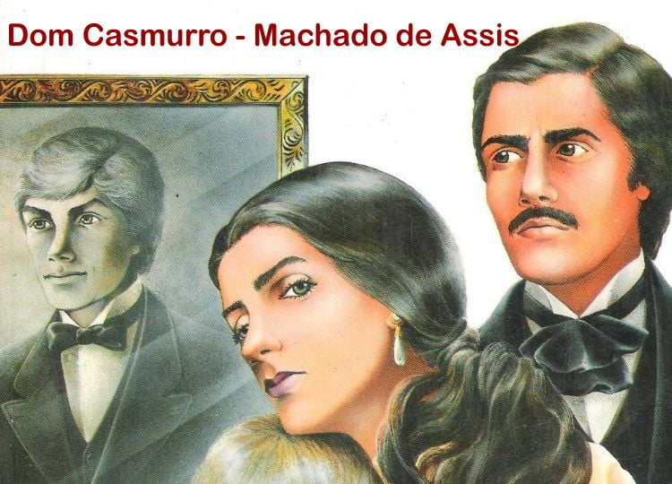
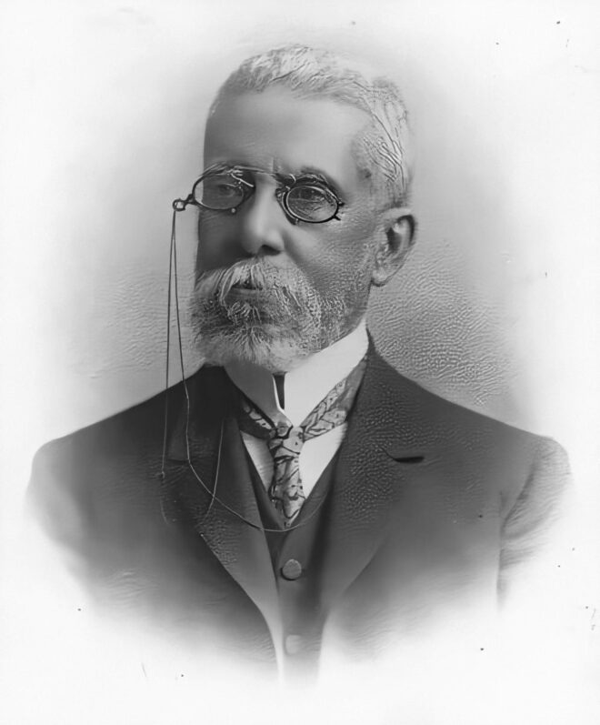
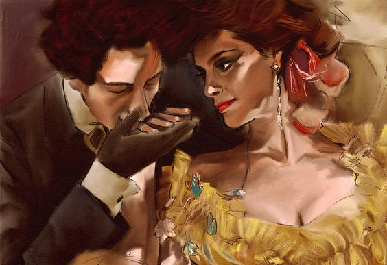

Bento Santiago é o narrador e personagem principal da história. Ele também é conhecido pelo apelido de
Dom Casmurro. O adjetivo "casmurro" significa pessoa teimosa, fechada em si mesma, e foi atribuído a
Bentinho quando ele era um senhor de idade e decidiu escrever um livro sobre suas histórias. Nesse
momento, os outros personagens envolvidos (Capitu e Escobar) já estavam mortos.
Essas histórias começam contando que quando estava grávida, a mãe de Bentinho, chamada Dona Glória, fez
uma promessa de que ele se tornaria padre. Porém, o que ela não esperava é que no início da adolescência
seu filho se apaixonasse pela filha dos vizinhos, Capitu, e que essa paixão fosse recíproca.
Capitu tenta impedir que ele vá para o seminário, mas não consegue. Bentinho vai, mas planeja não se
ordenar padre e, ao invés disso, ir para a faculdade de direito. É no seminário que ele conhece aquele
que viria se tornar seu melhor amigo, Escobar.
Escobar também não tem vocação para a vida religiosa e consegue escapar do seminário junto com Bentinho.
Para cumprir sua promessa, Dona Glória pagou as despesas para que um menino órfão se tornasse padre no
lugar de seu filho. Bentinho se torna advogado, acaba se casando com Capitu e tendo um filho chamado
Ezequiel. Escobar também arranja uma esposa.
Tudo ia bem para esses personagens, até que Bentinho, louco de ciúmes, começa a acreditar que Capitu
estava cometendo adultério com seu amigo Escobar. Ele quase não se comunica com a própria esposa e
somente os olhares e gestos da moça, não suas palavras, é que o fazem desconfiar da possível traição.
Ele também dúvida da própria paternidade, pensando que Ezequiel pode ser na verdade filho de Escobar.
Nas últimas linhas do livro ele diz: "(...) que a minha primeira amiga e o meu maior amigo, tão
extremosos ambos e tão queridos também, quis o destino que acabassem juntando-se e enganando-me... "
Personagens Principais:
Bentinho (Bento Santiago)
Personalidade: O narrador e protagonista da história, Bentinho é um homem que evolui de um garoto tímido
e inseguro para um advogado adulto e ciumento. Sua trajetória é marcada por inseguranças e dúvidas,
especialmente relacionadas ao amor e à fidelidade de Capitu.
Características: Sujeito à manipulação, ele é muito influenciado por sua mãe e por José Dias, seu
mentor. Ao longo da obra, sua obsessão por Capitu e o ciúme de sua esposa se tornam seus principais
traços, levando-o a se tornar amargo e desconfiado.
Capitu (Capitolina)
Personalidade: Capitu é a amiga de infância de Bentinho, com quem ele tem um romance turbulento. Sua
principal característica é sua inteligência, astúcia e beleza, sempre descrita por Bentinho como tendo
"olhos de cigana oblíqua e dissimulada", o que aumenta a desconfiança dele.
Características: Capitu é independente e enigmática, nunca se deixando dominar completamente. Sua
lealdade e fidelidade a Bentinho são questionadas ao longo do livro, especialmente após a morte de
Escobar, mas nunca ficam claras, o que mantém a dúvida sobre sua verdadeira natureza.
Dona Glória
Personalidade: Mãe de Bentinho, Dona Glória é uma mulher autoritária e controladora. Sua maior ambição é
que o filho se torne padre, uma decisão que ele resiste durante boa parte da obra.
Características: Dona Glória tem um caráter forte e é bastante manipuladora, mas sua principal motivação
é o bem-estar de Bentinho, mesmo que isso signifique sufocá-lo em suas escolhas.
José Dias
Personalidade: José Dias é o agregado da casa de Dona Glória e uma figura intermediária na vida de
Bentinho. Ele tenta influenciar as decisões do jovem e é mais um personagem que reforça a dependência de
Bentinho em relação a outros.
Características: Astuto e com a tendência de querer agradar aos mais poderosos, José Dias se coloca como
conselheiro de Bentinho, frequentemente sugerindo o que ele deve fazer, especialmente em relação ao
seminário e ao relacionamento com Capitu.
Escobar
Personalidade: Escobar é o melhor amigo de Bentinho, com quem ele compartilha momentos de amizade e
confidências. Escobar é descrito como um homem jovial e carismático, contrastando com a personalidade
mais reservada de Bentinho.
Características: Escobar tem uma personalidade vibrante e atraente, o que gera uma grande amizade com
Bentinho. Sua morte repentina e a relação com Capitu, no entanto, são fundamentais para o
desenvolvimento do ciúme de Bentinho, levando-o a suspeitar de um possível romance extraconjugal.
Ezequiel
Personalidade: Ezequiel é o filho de Bentinho e Capitu, que tem um papel importante na história, embora
sua presença não seja tão central quanto a de outros personagens.
Características: Ezequiel sofre com a sombra da desconfiança do pai, que suspeita sobre a paternidade
dele, devido à sua semelhança com Escobar. Ele é mais uma vítima da insegurança de Bentinho.
Sancha
Personalidade: Sancha é uma amiga de Capitu, que acaba se tornando esposa de José Dias, o agregado da
família Santiago.
Características: Ela não tem uma presença marcante, mas sua união com José Dias traz à tona mais uma
camada das relações de interesse e manipulação da obra.
Temas centrais e machadismo

Sobre a obra
Dom Casmurro é um romance realista voltado para a análise psicológica que foi publicado
pela primeira vez em 1899. Ele é ambientado no Rio de Janeiro do Segundo Reinado e narrado em primeira pessoa
por Bento Santiago, ou Bentinho, um homem branco e rico.
Ele conta sua própria história desde a adolescência com o objetivo de tentar compreender se sua esposa, Capitu,
era desde o início como ele a via após o casamento: uma mulher com inclinação à falsidade e à dissimulação.
O contexto histórico aparece de forma clara no enredo, que trabalha o tema das relações sociais. A elite
brasileira da época é apresentada em sua ambiguidade: ao mesmo tempo em que parece progressista, não deixa de
ser autoritária e patriarcal.
A linguagem do livro é culta e cheia de referências, mas também tem um tom de informalidade. O narrador é
irônico e ousado e frequentemente se dirige ao leitor, parecendo conversar conosco. Ele provoca e até mesmo
insulta seu próprio público-alvo. O objetivo disso era prender a atenção de quem estava lendo. Além disso, a
intertextualidade e a metalinguagem são utilizadas.
Críticos literários consideram Dom Casmurro como o terceiro livro da "trilogia realista" de Machado de Assis,
mas ele também apresenta características que retomam o Romantismo.
A estrutura da história não é linear, ou seja, não segue uma ordem cronológica. Os eventos, reflexões e
lembranças são contados conforme Bentinho deseja e na medida em que chegam à sua memória.
Dom Casmurro foi traduzido para diversas línguas desde sua primeira publicação. Também foi e ainda é adaptado de
muitas formas e por diferentes mídias, como o cinema, a música, a televisão, o teatro, os quadrinhos e a própria
literatura.
Machadismo
Machadismo é o estilo literário de Machado de Assis, que se caracteriza pelo uso
de ironia, humor, digressões, diálogos diretos com o leitor, análise psicológica profunda das personagens,
capítulos curtos e pela perfeição da linguagem. Essa fase mais madura do autor, a partir de 1881, marca uma
virada no Realismo brasileiro, com a publicação de obras como Memórias Póstumas de Brás Cubas.
Ironia e Humor:
Machado de Assis utiliza um humor sutil, mas amargo, e uma ironia feroz para criticar a sociedade e o
comportamento humano.
Metaficcionalidade e Diálogo com o Leitor:
É comum o autor conversar diretamente com o leitor, quebrando a quarta parede e comentando a própria
narrativa.
Análise Psicológica das Personagens:
O foco está no interior das personagens, explorando suas motivações, pensamentos e complexidades
psicológicas, uma abordagem que se aprofunda a partir de 1881.
Digressões:
O autor frequentemente interrompe a narrativa com longas digressões, que são desvios do assunto
principal para comentários ou reflexões.
Capítulos Curtos:
As narrativas de Machado de Assis são conhecidas por seus capítulos curtos e concisos.
Linguagem:
A linguagem é coloquial, mas com um rigor gramatical impecável, conferindo elegância e precisão ao
texto.
Intertextualidade:
O uso de referências a outros textos e obras literárias é uma marca constante em sua escrita.
Contexto histórico e literário
A literatura do Realismo reflete a realidade da segunda metade do século XIX nas produções literárias. Os
autores desse período procuraram seguir a tendência filosófica do Positivismo, ao observar e analisar a
realidade e ao reproduzi-la fielmente.
Ao contrário do Romantismo, fase literária anterior, os escritores realistas não expressavam subjetividade
na linguagem, assumiram uma postura cientificista em relação aos fatos reais.
As características da literatura realista se contrapõem com as românticas. Os cenários passaram a ser
urbanos e o ambiente social passou a ser valorizado ao invés do natural.
O amor e o casamento, os quais eram elementos de felicidade no Romantismo, transformaram-se em convenções
sociais de aparência.
Não houve uma idealização da figura masculina como herói e sim uma exposição do homem que trabalha e que
luta para sair de uma condição medíocre.
O próprio nome deste período fala a respeito de sua característica mais marcante: a realidade. A
contemporaneidade é um atributo dos autores do Realismo que se preocupavam com o momento histórico, com o
momento presente da sociedade em seus contextos políticos e econômicos.
As personagens criadas foram baseadas em pessoas comuns encontradas no cotidiano dos escritores, com suas
obrigações diárias condicionadas a fatores de raça, de clima, de classe social.
A linguagem no Realismo é mais simples, sem preocupações estéticas exacerbadas, de modo a abranger um
público maior.
Quem foi Machado de Assis?

Machado de Assis teve uma infância difícil no Rio de Janeiro. Era pobre e negro, além de
gago e epilético. Porém, aprendeu muito estudando sozinho, ou seja, era autodidata.
Ele se tornou um dos maiores nomes da literatura brasileira e o fundador da Academia Brasileira de Letras.
Escreveu em vários gêneros literários, tendo sido poeta, dramaturgo, romancista, contista, cronista,
jornalista, folhetinista e crítico literário.
Machado de Assis causou uma revolução de conteúdo e estilo com sua obras inaugurando o Realismo na
literatura brasileira. Além disso, o autor foi um observador atento do seu momento histórico (a virada do
século XIX para o XX). Testemunhou a Abolição da Escravatura (1898) e a mudança política brasileira do
Império para a República (1899) e fez análises que aparecem em suas histórias.
Por que Bentinho acha que Capitu o traiu?

A desconfiança de Bentinho com Capitu sempre foi presente no romance, desde o começo, quando ainda eram
crianças. Um dos motivos mais fortes que levaram Bentinho a se afastar de Capitu foi o fato de ele achar que
seu filho, Ezequiel, fosse, na verdade, filho de seu amigo, Escobar, em virtude de uma semelhança na
aparência e nos modos de agir.
Além disso, Bentinho e Capitu tiveram muita dificuldade para engravidar, tentando por anos até que
conseguissem. Atrelado a essas desconfianças, houve uma ocasião em que Bentinho, ao chegar da ópera que
havia ido só, encontrou, por acaso, Escobar na porta de sua casa, o que se somou as suas desconfianças de
que, de fato, Ezequiel era filho de Escobar.
A defesa de Capitu
Capitu, apesar de se mostrar muito esperta e astuta, jamais deu indícios reais de que estaria com Escobar.
Os acontecimentos que pautaram as desconfianças de Bentinho são ambíguos e, por isso, não há como defender
nem Capitu nem Bentinho.
No entanto, é possível presumir que alguns desses casos de desconfiança sejam frutos de uma má interpretação
por parte de Bentinho, tais como a demora para engravidar, que poderia ser justificada como um problema
congênito, tendo em vista que Dona Glória também demorara para engravidar de Bentinho; ou como o garoto
assemelhava-se aos modos de Escobar, o que poderia ser uma brincadeira de criança, tendo em vista que o
garoto tinha esse costume de imitar; a fisionomia parecida poderia ser o acaso, tal qual a semelhança entre
Capitu e a mãe de Sancha, que nada tinham de parentesco e, ainda assim, pareciam-se.
Relações da obra dom casmurro com o Realismo e com questões sociais e filosóficas do período.
O romance Dom Casmurro, de Machado de Assis, insere-se no Realismo por meio da análise psicológica profunda das
personagens, especialmente do narrador-protagonista Bentinho, cuja visão subjetiva levanta dúvidas sobre a
verdade dos fatos narrados. A obra critica valores sociais da elite carioca do século XIX, como o casamento, a
religiosidade e a moral burguesa, utilizando a ironia como recurso para revelar contradições e hipocrisias. Além
disso, o enredo dialoga com questões filosóficas da época, como o ceticismo, a dúvida sobre a objetividade da
verdade e a relatividade das percepções humanas, aproximando-se das discussões modernas sobre a subjetividade e
a instabilidade da memória.